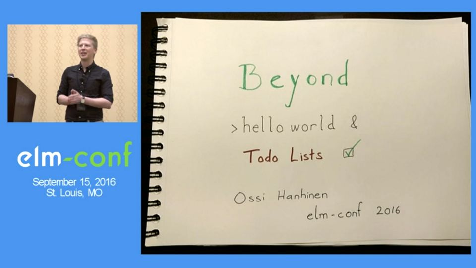
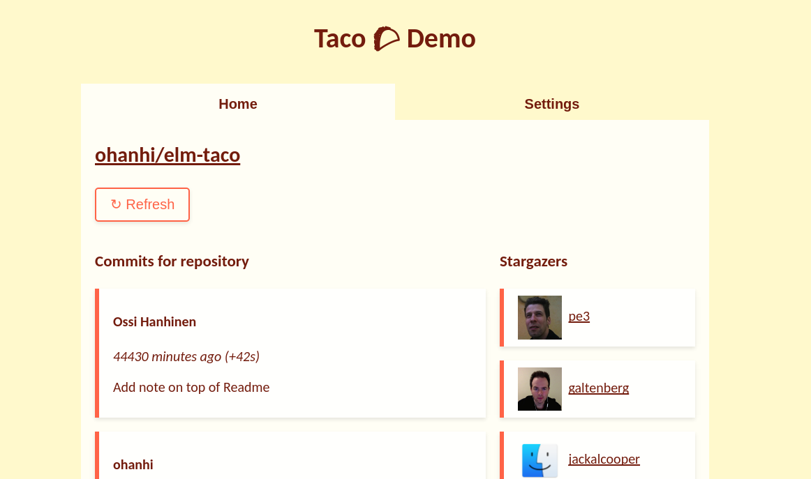
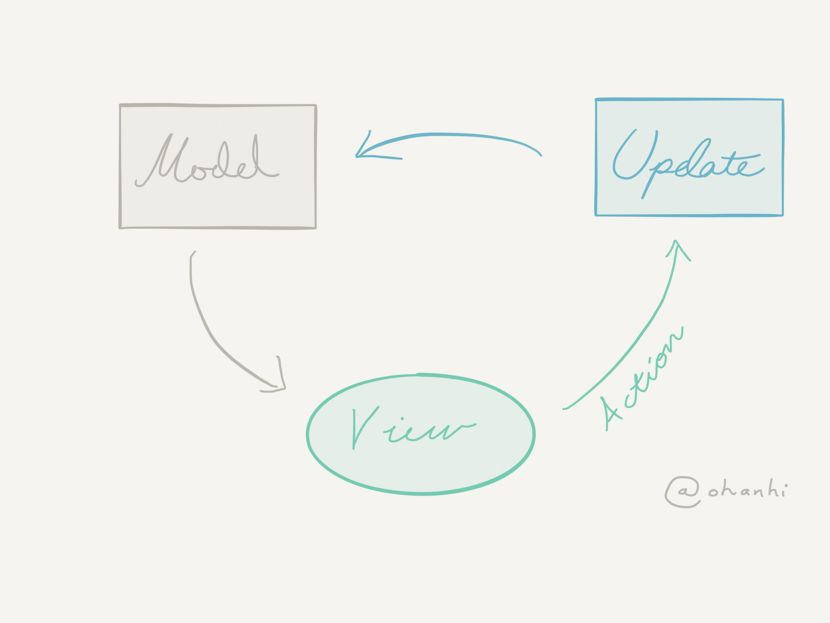

I am a user interface enthusiast and a web frontend expert. I love functional programming with
Elm and get the most joy from helping other people in their work or daily life.
I speak at meetups and conferences because I want to share what I know.
I co-organize the Helsinki Elm Community events.
Blog
If you're using React, Redux and TypeScript, you would be so happy with Elm! - March 1, 2019
Tasks in Modern Elm - February 9, 2018
elm-quicks 1: Check palindromes in Elm - October 20, 2017
Elm and the unknown - Using Elm for project work - May 11, 2017
Master Elm pt. 2: Introduction to data structures - April 21, 2017
From Jekyll to Hakyll - April 17, 2017
Elm Decoders and Secret Spy Messages - January 24, 2017
The Why and When of Choosing Elm - the Visual Edition - January 13, 2017
The Why and When of Choosing Elm - January 10, 2017
Base for a game in Elm 0.17 - Revisiting the "hard way" - May 18, 2016
Elm Native UI: The future of Elm + React Native - March 21, 2016
Master Elm pt. 1: Why Elm - March 2, 2016
Elm Native UI: Writing a React Native app in Elm - February 23, 2016
SSL on localhost with Phoenix Framework - February 18, 2016
Learning FP the hard way - Experiences on the Elm language - June 10, 2015
Other work

My talk on using Elm for customer work, elm-conf US 2016
An experimental way of building mobile apps in Elm

An example for organizing large SPAs in Elm

Article on a customer case, published in Hacker Bits